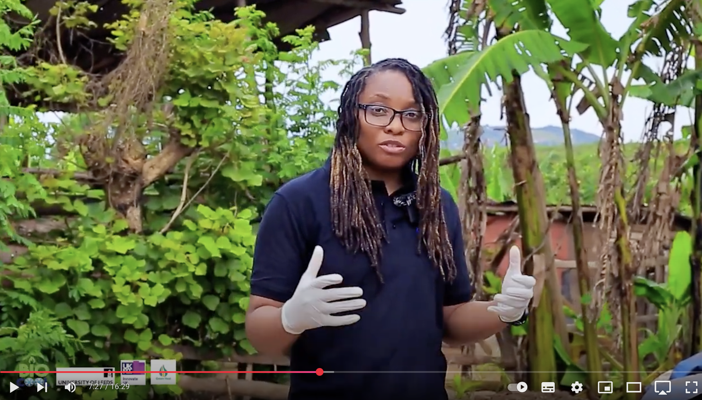

Project Overview
Biobool is a groundbreaking research initiative focused on developing sustainable biological processes to convert organic waste streams into high-value resources, contributing to circular economy principles and reducing environmental impact.
The Biobool project addresses the critical challenge of organic waste management by harnessing the power of microbial communities to transform waste into valuable products. By utilizing advanced biotechnology and process engineering, our team has developed innovative methods that not only mitigate environmental pollution but also create economic opportunities.
Since its inception in 2024, Biobool has achieved significant breakthroughs in bioconversion technology, establishing itself as a leading research initiative in the field of resource recovery and sustainable waste management.

Biobool's advanced bioreactor system at the WPE laboratory
Research Team
Research Team
The Biobool project is supported by a dedicated team of 5 PhD students and 3 postdoctoral researchers with diverse expertise in microbiology, chemical engineering, and sustainability science.
Key Research Areas
Waste-to-Resource Technology
Development of innovative bioprocesses to convert organic waste streams into valuable resources such as biofuels, biochemicals, and biopolymers.
Microbial Community Engineering
Optimizing microbial communities for enhanced bioconversion efficiency and targeted product formation through selective enrichment and genetic engineering approaches.
Scale-up and Process Integration
Translating laboratory-scale findings to pilot-scale operations and integrating bioconversion processes with existing waste management infrastructure.
Life Cycle Assessment
Comprehensive analysis of environmental impacts and economic viability of developed bioconversion technologies to ensure sustainability.
Research in Action
This video demonstrates the Biobool process in action, showcasing our innovative approach to converting food waste into high-value bioproducts. The narration explains the key steps in the bioconversion process and highlights the environmental and economic benefits of our technology.
Research Gallery
Key Findings
Enhanced Resource Recovery
Our optimized bioprocess achieves up to 85% conversion efficiency, significantly higher than conventional methods (typically 40-60%), enabling more effective resource recovery from organic waste streams.
Novel Bioproduct Synthesis
Identification of unique microbial pathways has enabled the production of high-value biochemicals and biopolymers, creating new economic opportunities from waste materials.
Reduced Environmental Impact
Life cycle assessment demonstrates that the Biobool process reduces greenhouse gas emissions by up to 65% compared to conventional waste management practices.
Scalable Technology
Successful pilot-scale implementation confirms the scalability of the technology, with minimal loss of efficiency during scale-up (less than 10% reduction in conversion rate).
Related Publications
Enhanced bioconversion of food waste to high-value products using engineered microbial consortia
Bioresource Technology, 325, 127382
View PublicationOptimizing process parameters for scaled-up waste bioconversion: A techno-economic analysis
Waste Management, 158, 234-248
View PublicationLife cycle assessment of integrated bioconversion processes for organic waste management
Journal of Cleaner Production, 312, 127865
View PublicationMicrobial community dynamics during bioconversion of mixed organic waste streams
Applied Microbiology and Biotechnology, 105(8), 3245-3261
View PublicationIndustry Partners
The Biobool project collaborates with leading organizations across the waste management, biotechnology, and sustainability sectors to facilitate knowledge transfer and accelerate real-world implementation.
Interested in Biobool?
For more information about the Biobool project, research collaboration opportunities, or access to our technologies, please contact our research team.